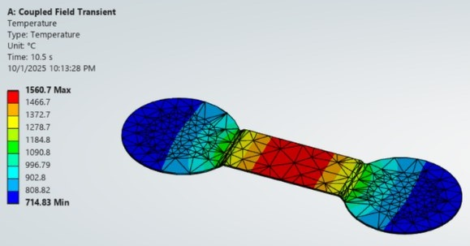
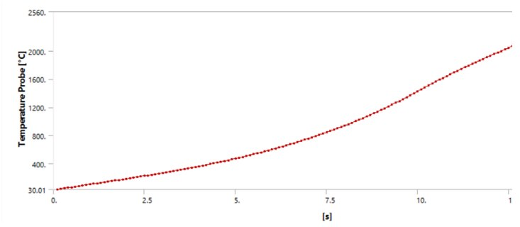

Fusible Link Simulation
An Ansys model to find which nickel strip geometry fuses reliably at a target fault current, so the strips connecting cells in a cylindrical-cell pack can double as fusible links. The main result was not a geometry: I could never get the simulation to agree with bench tests, because the answer depends so heavily on the boundary conditions.
- Role
- Full design and implementation (individual project)
- Tools
- Ansys Mechanical, Ansys Workbench
- Analysis
- Coupled electro-thermal transient
- Status
- Model built; did not match bench results
The problem
Fuses in a battery pack isolate faulty cells and stop dangerous current surges. In cylindrical-cell packs, the spot-welded nickel strips that connect cells often act as fusible links too. Their geometry has to be tuned so they fuse at the target fault current without failing during normal operation.
Approach
I used a coupled transient analysis in Ansys Mechanical, pairing an electric analysis for Joule heat generation with a thermal analysis for temperature rise. Nickel's resistivity is defined as a temperature-dependent curve. At each time step the solver computes Joule heating from the strip's current resistance, updates the temperature, then reads the new resistance off the curve before the next step.
That two-way coupling matters. Nickel's resistivity climbs with temperature, so as the strip heats it generates more heat per amp, which accelerates the run toward the fusing point. Iterating over the full simulation period captures the strip's complete temperature-versus-time response, including that feedback near failure.


What the model predicts
At a 50 A fault current, the neck of the link reaches 1560 °C by 10.5 s, past nickel's melting point of about 1455 °C. The temperature curve steepens as it climbs, which is the resistivity feedback described above.
Where it fell apart
The model runs and gives a clean, physically sensible curve. It just did not predict what real links did on the bench. I went back and forth between the simulation and bench tests and never got the two to agree.
The reason is boundary conditions. A fusible link is a very small piece of metal, so its temperature is set less by the strip itself than by where its heat can go:
- Conduction out of the ends, into the spot welds and the cells or fixtures behind them.
- Convection and radiation off the surface of the strip.
- Contact resistance at the connections, which adds heat the model does not generate.
None of these are properties of the nickel, and all of them have to be assumed. Changing any one by a plausible amount moved the predicted fusing point more than changing the link geometry did, so the result mostly reflected my assumptions and not the part.
Takeaway
Modelling a fusible link is much harder than the simple setup suggests. The coupled physics is the easy part; the hard part is knowing the thermal environment well enough for the answer to mean anything. I would not trust it for an absolute fusing current; that number has to come from testing the link in the pack it will actually sit in.
The model was still useful, because it showed how the link fails. Nickel's resistance rises with temperature, so at a fixed current a hotter strip dissipates more power, which heats it further. That resistive runaway is why the temperature curve steepens toward the end instead of levelling off, and it holds whatever the boundary conditions are. I would also still use a model like this to compare one geometry against another.
It could also work as a check in cases too complicated to reason through by hand. In a parallel group where the strip geometry is not straightforward, fault current splits unevenly between paths, and it is not obvious which section heats first. A model like this could show whether the intended link is the part that fuses, even if the exact current and time are off.